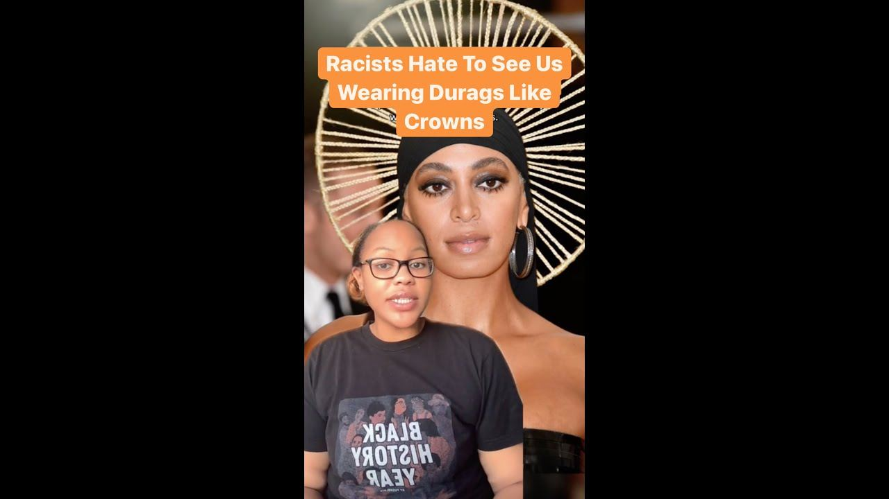

History of the Durag: From Workwear to Wave Culture Icon
The durag is usually introduced as a wave tool, but it is older and bigger than that: a piece of practical headwear with roots in labour, carried into Black hair culture, made essential by wave culture, fought over by institutions, and finally walked down runways. PushBlack's (@PushBlack) short history below frames the durag as what it has always been — a crown, in their words. This guide walks the longer road: where the durag came from, how it got its meaning, and why a simple tied cloth carries the weight it does.
Roots: protection before style
Headwraps for work and hair protection have been worn by Black men and women for centuries, through slavery, sharecropping, and industrial labour — cloth tied on to keep hair clean, contained, and protected through hard work in hard conditions. The durag's direct ancestors are the stocking caps and 'do-rags' of the early twentieth century, worn to hold hairstyles — conks, processes, pressed hair — in place overnight.
The name itself compresses the function: a rag for your 'do. By the mid-twentieth century, the form had settled into roughly the shape we know — a close cap with tails — and it spread wherever Black hair culture spread, as a tool first and a statement later.
Wave culture makes it essential
The durag's modern identity was forged by wave culture. As 360 waves rose through the 1980s and 90s into a defining Black hairstyle — carried by hip-hop, barbershop culture, and eventually the internet's wave communities — the durag became the style's indispensable instrument. No compression, no pattern: the equation made the durag as essential to the look as the brush.
That era fixed the design (long tails, silky fabrics, the seam-out rule all standardised through community practice) and the rituals around it — the tie, the check, the wave reveal. The durag stopped being only protection and became craft equipment: the mark of someone who took their crown seriously enough to train it nightly.
Bans, backlash, and the runway
The durag's cultural weight attracted the other kind of attention: schools, leagues, and workplaces variously banned or stigmatised it, folding a grooming tool into respectability arguments that the culture heard clearly — and answered by wearing it prouder. The PushBlack piece below makes that argument in its title alone: the durag as crown, worn in defiance of every attempt to make it shameful.
Then fashion arrived, as it always eventually does: durags at galas and on runways, luxury versions at luxury prices, celebrities teaching ties on magazine platforms. The culture's verdict on all of it is relaxed — the durag was always beautiful to the people who made it matter. A century in, it remains what it was at the start: protection, craft, and identity, tied on by hand, every night.
Watch: Racists Hate To See Us Wearing Durags Like Crowns
Video: “Racists Hate To See Us Wearing Durags Like Crowns” by PushBlack (@PushBlack) · Watch on YouTube
Shop the gear
Everything in this guide runs on the right gear: a durag that holds compression without slipping, a cap that stays put, and fabric that treats your hair right. The durag.store launch lineup is built to that standard — dual-layer construction, long tails, and stitching made to survive the routine. Join the launch list and use code GOLDSTANDARD for 15% off your first order.
Keep learning
- Styling a Durag With Outfits: Colour, Fabric and Occasion — Intermediate · Styling & Culture
- Choosing Durag Colours: What Works With Your Skin, Hair and Wardrobe — Basic · Styling & Culture
- Custom Print Durags: Designing, Printing, and What to Check Before You Buy — Intermediate · Styling & Culture
Sources: Video — “Racists Hate To See Us Wearing Durags Like Crowns” by PushBlack (@PushBlack), youtube.com. Guide written by the durag.store Wave Lab.